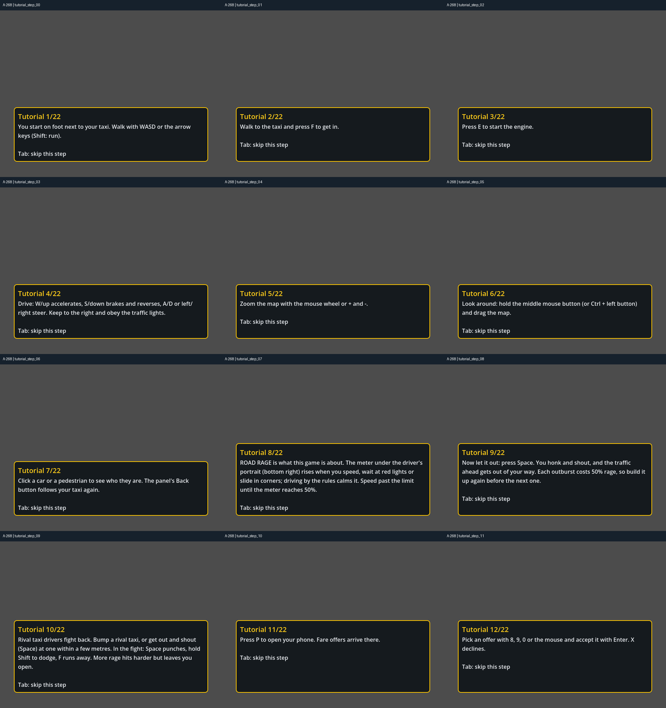
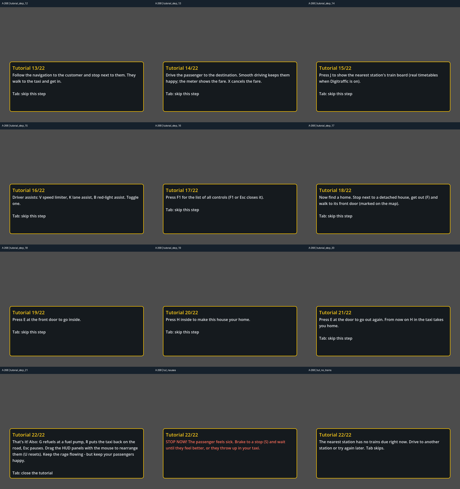
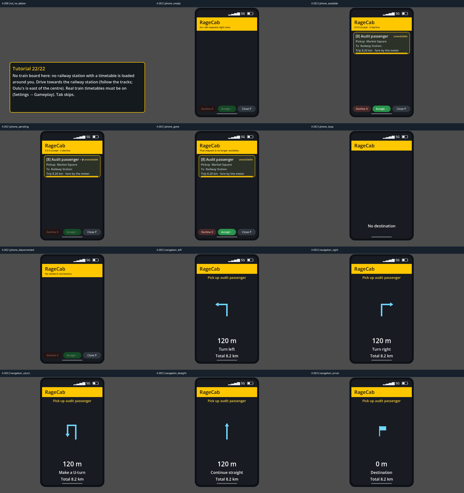
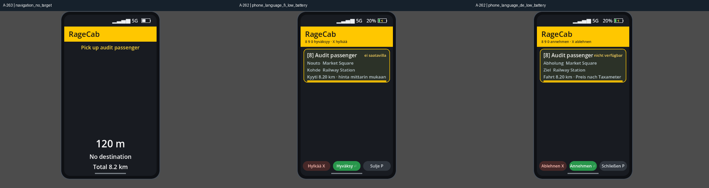

Native source pixels. Scroll horizontally if necessary; use browser zoom 100%. Review each panel, including rejected/empty slots. Opening this page does not mark review complete.
All families



